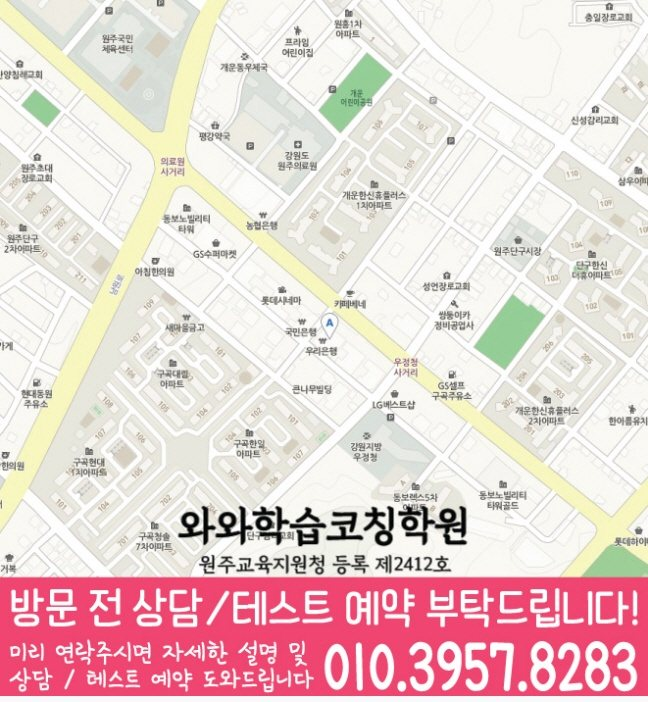

명륜동 상담에서는 독해력, 어휘 이해, 서술형 표현, 학교 지문 정리가 실제 문제 풀이와 시험 준비로 이어지는지 확인합니다.
☁️ 강원 원주시 명륜동 국어·영어·수학 학습관리
명륜동 국영수학원
명륜동 국영수학원 선택 전 확인할 정보입니다. 제공된 학교 목록에서 확인된 구곡초등학교·서원주초등학교와 학생이 가져온 실제 진도표·시험 범위, 최근 시험지, 반복 오답을 바탕으로 국어와 영어·수학의 시작점을 나눕니다.
강원
원주시
국어·영어·수학 집중
초등·중등·고등
명륜동에서 확인할 단구점 수강·위치 정보
국어 지문에서 찾은 근거, 영어 문장의 해석 이유, 수학 식을 세운 과정을 한 가지씩 준비하세요. 세 과목을 함께 공부한다면 혼자 설명이 막히는 과목부터 우선순위를 정하고 교재·과제·복습 분량을 각각 확인하세요.
- 주소
- 강원특별자치도 원주시 서원대로 406 리더스빌딩 402
- 찾아오는 길
- 단구동 롯데시네마 근처에 우리은행 건물 4층
- 시작 시간 참고
- 평일 오후 1시 30분 이후
- 주말 안내
- 주말 정규 수업은 운영하지 않습니다.
| 과목 | 안내 학년 |
|---|---|
| 국어 | 초5~고2 |
| 영어 | 초5~고3 |
| 수학 | 초5~고3 |
| 과학 | 초4~고1 |
| 사회 | 초5~고2 |
안내 학년과 현재 모집 가능 여부는 구분해서 확인하세요. 실제 요일·시작과 종료 시각·교재·수업 횟수·비용은 희망 과목과 학년을 정해 상담에서 확인할 수 있습니다.
홈페이지 상담 연락처: 010-6839-8283. 방문 전에는 이 페이지의 주소와 희망 과목·학년을 함께 확인해 주세요.

이미지를 누르면 확대할 수 있습니다. 원본 크기로 전환해 작은 글씨와 전체 내용을 읽어 보세요.

이미지를 누르면 확대할 수 있습니다. 원본 크기로 전환해 작은 글씨와 전체 내용을 읽어 보세요.
Korean English Math Guide
명륜동 국영수학원, 국어로 읽고 이해하는 힘까지 함께 봐야 세 과목 관리가 선명해집니다.
명륜동에서 국영수학원을 찾는 학부모님은 보통 “국어까지 함께 봐야 하는지, 영어와 수학만 관리해도 되는지”, “세 과목을 함께 관리해도 되는지”를 고민합니다. 실제로는 과목을 나누기 전에 아이가 공부를 실행하는 방식부터 살펴보는 것이 중요합니다.
국어는 지문을 읽고 조건을 파악하는 힘이 중요하고, 영어는 어휘·문법·독해가 누적되어야 하며, 수학은 개념을 문제에 적용하는 과정에서 오답 원인을 잡아야 합니다. 특히 플래너를 작성하지만 완료 기준이 모호해 실행 기록이 남지 않는 경우라면 진도보다 막힌 단계와 완료 기준을 먼저 구분해야 합니다. 명륜동 국영수학원 상담에서는 국어 독해와 서술형 표현을 먼저 확인하고, 영어의 누적 학습과 수학의 오답 원인을 함께 점검합니다.
구곡초등학교, 서원주초등학교, 남원주중학교, 단구중학교, 치악고등학교, 원주고등학교 주변 학교의 진도와 시험 준비 흐름을 상담 때 함께 확인합니다.
명륜동 학생의 영어 누적 학습과 수학 개념·유형·오답 관리 흐름이 끊기지 않도록 주간 계획 안에서 함께 조정합니다.
명륜동 학생의 시험 기간에는 국어·영어·수학의 공부량이 한쪽으로 쏠리지 않도록 주간 계획을 조정합니다.
Grade Coaching
명륜동 학년별 상담 자료와 공부 점검 기준
같은 국영수 수업이라도 초등·중등·고등 단계에 따라 목표가 달라집니다. 현재 학년과 학교 진도, 최근 학습 기록을 함께 보아야 실제 관리 순서를 정할 수 있습니다.
초등 단계에서는 독해력, 어휘 이해, 서술형 표현, 학교 지문 정리를 확인하고, 영어 누적 학습과 수학 개념·유형·오답 관리 흐름이 매일 이어지도록 작은 루틴을 만듭니다. 공부 습관이 잡히는 시기라 짧고 꾸준한 관리가 중요합니다.
학교 시험 범위에 맞춰 국어의 취약 단원과 영어·수학의 누적 과제를 함께 관리합니다. 내신 대비는 시험 직전이 아니라 평소 누적 관리가 핵심입니다.
국어의 점수 변동 원인과 영어·수학의 누적 학습 흐름을 함께 확인합니다. 과목별 우선순위를 잡아 시험 기간 계획이 흔들리지 않게 돕습니다.
Recommended
명륜동에서 이런 학생이라면 국영수 상담을 권합니다.
국어 지문을 읽어도 핵심을 잘 못 잡는 학생명륜동 상담에서는 문제 조건, 핵심어, 문단 흐름을 읽는 방법부터 확인해 서술형 답안으로 연결합니다.
영어와 수학도 함께 흔들리는 학생명륜동 학생의 기록을 기준으로 영어 누적 학습과 수학 오답 관리가 주간 계획 안에서 끊기지 않는지 점검합니다.
학습 기록과 실제 실행이 어긋나는 학생플래너를 작성하지만 완료 기준이 모호해 실행 기록이 남지 않는 경우라면 공부 시간을 늘리기 전에 막힌 단계와 완료 기준부터 다시 정리할 필요가 있습니다.
Verified Starting Point
현재 위치부터 정리하는 명륜동 학습 상담
국영수학원을 고를 때 결과만 빠르게 비교하면 학생에게 필요한 과정이 가려질 수 있습니다. 명륜동 국영수학원 상담은 강원 원주시 명륜동 학생의 실제 기록에서 출발해 진단, 계획, 실행 확인, 오답 재학습의 순서를 세우는 방식이 적절합니다.
명륜동 관련 사실은 센터정보 자료에서 확인된 와와학습코칭센터 단구점에서 확인되는 내용에 한정했습니다. 학습 범위 역시 제공된 학교 목록에서 확인된 구곡초등학교·서원주초등학교와 학생이 가져온 실제 진도표·시험 범위를 토대로 점검하며, 자료가 없는 부분은 추측하지 않고 상담 시 재학 학교와 현재 진도를 다시 확인합니다.
Learning Sequence
국어·영어·수학의 막힌 단계와 실행 순서
학생에게 플래너를 작성하지만 완료 기준이 모호해 실행 기록이 남지 않는 경우가 보인다면 의지 부족으로 단정하지 않는 것이 중요합니다. 명륜동 국영수학원 상담에서는 시작 시간, 교재 범위, 오답 재풀이 시점을 따로 확인해 실제로 바꿀 수 있는 행동 한두 가지를 먼저 선택합니다.
국어·영어·수학 관리의 핵심은 같은 시간을 똑같이 나누는 것이 아닙니다. 독해력, 어휘 이해, 서술형 표현, 학교 지문 정리를 먼저 살피고, 영어 누적 학습과 수학 개념·유형·오답 관리를 근거로 시험 일정 전까지 필요한 우선순위를 조정합니다.
강원 원주시 명륜동 학생의 실행 기록은 상담에서 정한 우선순위를 검증하는 자료가 됩니다. 일주일 뒤 완료율만 보지 않고 오답의 종류와 재풀이 결과까지 살펴, 다음 계획의 순서와 밀도를 조정합니다.
Parent Check
명륜동 학생의 학습 기록을 함께 확인하는 법
명륜동 국영수학원 선택 후에는 한 번의 결과보다 계획과 점검이 반복되는 구조를 보세요. 국어와 영어·수학에서 각각 남은 과제가 무엇인지, 오답 재학습이 끝났는지, 다음 진도와 연결되었는지를 확인하면 관리의 지속성을 판단할 수 있습니다.
Target Schools
명륜동 주변 학교 자료를 상담에 활용하는 방법
명륜동 주변 학생들이 상담 전 확인하기 쉽도록, 현재 정리된 학교 목록을 학년 단계별로 나누어 담았습니다.
구곡초등학교
서원주초등학교
남원주중학교
단구중학교
치악고등학교
원주고등학교
학교별 교과 진도, 시험 범위, 수행평가 준비 상황은 학생마다 다르기 때문에 상담 시 현재 교재와 최근 평가지를 함께 확인하면 더 정확한 학습 계획을 세울 수 있습니다.
학교 목록은 상담 준비를 위한 지역 참고 정보입니다. 특정 학교와의 제휴나 별도 반 개설을 의미하지 않습니다. 학생이 학교에서 받은 실제 진도표·평가 안내·사용 교재를 가져와 수업에서 확인할 범위와 집에서 복습할 범위를 나누어 질문하세요.
Checklist
명륜동 국영수학원 상담 전 체크리스트
명륜동 국영수학원 국어 확인 자료: 현재 교재, 최근 시험지, 반복해서 막히는 단원
명륜동 영어·수학 확인 자료: 과제 기록, 오답 재풀이 여부, 다음 진도 준비 상태
학교별 확인 자료: 제공된 학교 목록에서 확인된 구곡초등학교·서원주초등학교와 학생이 가져온 실제 진도표·시험 범위
플래너를 작성하지만 완료 기준이 모호해 실행 기록이 남지 않는 경우에 해당하는지 보여주는 플래너와 최근 실행 기록
FAQ
명륜동 국영수학원 자주 묻는 질문
명륜동 국영수학원에서는 국어·영어·수학을 함께 관리하나요?
함께 살펴보되 같은 방식으로 묶지는 않습니다. 국어는 독해력, 어휘 이해, 서술형 표현, 학교 지문 정리를 기준으로, 영어·수학은 영어 누적 학습과 수학 개념·유형·오답 관리를 기준으로 각각 확인한 뒤 학년과 학교 진도에 맞춰 우선순위를 정합니다.
학교 진도와 명륜동 국영수학원 학습 계획은 어떻게 맞추나요?
제공된 학교 자료와 학생이 가져온 실제 진도표를 기준으로 시험 범위와 복습 시기를 확인합니다. 확인되지 않은 학교 일정은 임의로 가정하지 않고 상담 시점의 자료에 맞춰 계획을 조정합니다.
명륜동 국영수학원 상담은 어떤 순서로 진행되나요?
먼저 현재 교재와 학교 진도, 최근 시험지, 반복 오답을 확인합니다. 그다음 국어·영어·수학에서 혼자 해결되는 부분과 설명이 필요한 부분을 나누고, 학생이 실제로 실행할 수 있는 학습 순서를 안내합니다.
명륜동 국영수학원을 알아볼 때 두 과목을 함께 공부할 때 우선순위는 어떻게 정하나요?
최근 시험지와 학교 진도, 누적 과제, 반복 오답을 과목별로 나눈 뒤 시험 범위와 남은 기간에 맞춰 먼저 보완할 단계를 정합니다. 명륜동 국영수학원의 실제 적용 범위는 학생의 학년과 현재 학교 진도, 상담 시 확인한 자료에 따라 달라질 수 있습니다.
명륜동 국영수학원에서 오답은 어떻게 다시 관리하면 좋나요?
틀린 문제를 개념 공백, 적용 순서, 계산·표현 실수로 나누고 일정 시간이 지난 뒤 다시 풀어보는 기록까지 확인하는 것이 좋습니다. 명륜동 국영수학원의 실제 적용 범위는 학생의 학년과 현재 학교 진도, 상담 시 확인한 자료에 따라 달라질 수 있습니다.
상담 참고
명륜동 상담 시 확인할 국영수 학습 변화
과제를 했는지만 묻기보다 국어에서 막힌 단계와 다시 풀어본 기록을 확인해야 다음 계획을 구체적으로 조정할 수 있습니다.
명륜동 국영수학원 상담에서는 틀린 문제를 개념 공백, 적용 순서, 계산·표현 실수로 나누어 기록해 같은 실수가 반복되는 이유를 확인합니다.
구곡초등학교·서원주초등학교와 현재 교재를 함께 보면 국어·영어·수학에서 학교 진도와 개인 복습이 어긋난 지점을 구분하기 쉽습니다.
다른 지역 안내
명륜동 주변 국영수학원도 함께 보기
같은 시군구와 가까운 지역의 국영수 상담 페이지로 자연스럽게 이동할 수 있게 정리했습니다.
Page Route
명륜동 페이지 이동
현재 페이지와 연결된 상위 페이지를 빠르게 확인할 수 있습니다.